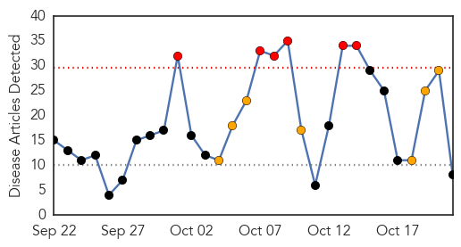

30 Day Trends
Web: 6 alerts, 7 warnings
Twitter: 0 alerts, 0 warnings
Top Articles:
- 0.995
- Today’s Email Announcements
- 0.990
- H7N9 Bird Flu Reaches Beijing
- 0.979
- Eisenhower Medical makes changes to protect patients, staff during flu season
- 0.960
- Flu clinics to begin soon
- 0.959
- Nurses Across the U.S. are Taking a Stand Against Forced Flu Vaccines
- 0.920
- Flu Shot Remains Most Dangerous Vaccine Based on Injuries and Deaths Compensated by Government
- 0.716
- Saskatchewan pauses mandatory flu shot policy for health-care workers
- 0.632
- Saskatchewan pauses mandatory flu shot policy for health-care workers
Top Tweets:
-
No tweets found for Oct 21, 2015
Web/News Articles
Tweets

Article Locations

Article Confidences